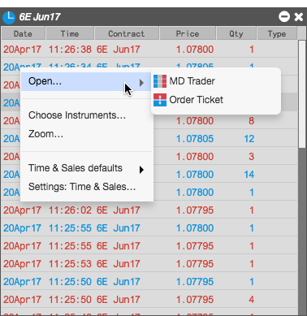

From a Time and Sales widget, you can also quickly open the following widgets for a selected instrument to place orders:
To open an order entry widget, right-click on a row and select the widget from the Open sub-menu.
